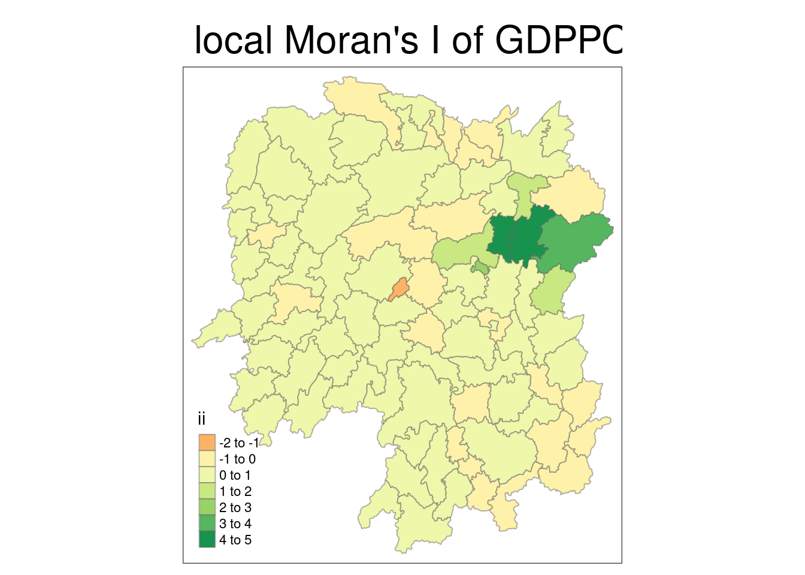
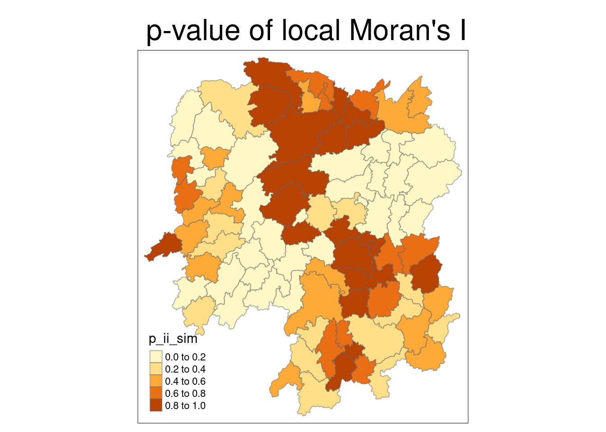
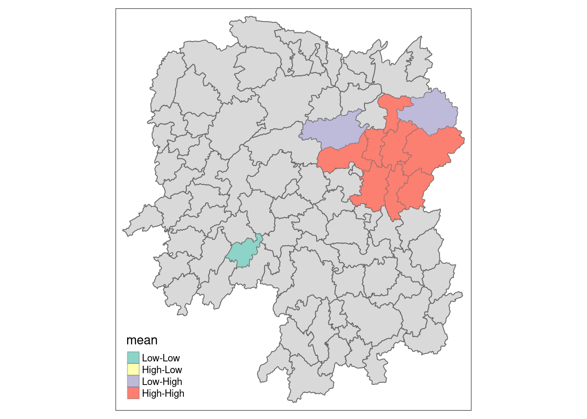
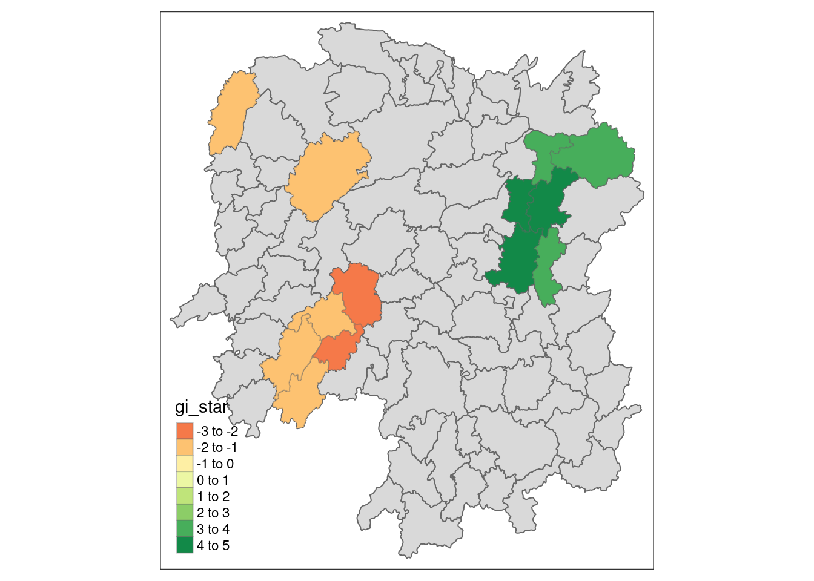

pacman::p_load(sfdep, tmap, tidyverse, sf)In-class Exercise 6
Note that we used spdep earlier. We are going to use sfdep which is a wrapper on top of it. It make working with tidyverse way more convenient.
hunan <- st_read(dsn = "data/geospatial",
layer = "Hunan")Reading layer `Hunan' from data source
`/home/tropicbliss/GitHub/quarto-project/In-class_Ex/In-class_Ex06/data/geospatial'
using driver `ESRI Shapefile'
Simple feature collection with 88 features and 7 fields
Geometry type: POLYGON
Dimension: XY
Bounding box: xmin: 108.7831 ymin: 24.6342 xmax: 114.2544 ymax: 30.12812
Geodetic CRS: WGS 84hunan2012 <- read_csv("data/aspatial/Hunan_2012.csv")Rows: 88 Columns: 29
── Column specification ────────────────────────────────────────────────────────
Delimiter: ","
chr (2): County, City
dbl (27): avg_wage, deposite, FAI, Gov_Rev, Gov_Exp, GDP, GDPPC, GIO, Loan, ...
ℹ Use `spec()` to retrieve the full column specification for this data.
ℹ Specify the column types or set `show_col_types = FALSE` to quiet this message.hunan <- left_join(hunan, hunan2012) %>% select(1:4, 7, 15)Joining with `by = join_by(County)`We will keep this as WGS84.
wm_q <- hunan %>% mutate(nb = st_contiguity(geometry), wt = st_weights(nb, style = "W"), .before = 1)wm_q is a tibble, and the nb field represents neighbours. .before = 1 makes sure that the fields created with mutate are inserted in front of the other fields.
global_moran_test(wm_q$GDPPC, wm_q$nb, wm_q$wt)
Moran I test under randomisation
data: x
weights: listw
Moran I statistic standard deviate = 4.7351, p-value = 1.095e-06
alternative hypothesis: greater
sample estimates:
Moran I statistic Expectation Variance
0.300749970 -0.011494253 0.004348351 Moran I statistic is positive, which shows signs of clustering. But since it is only 0.3, there is only weak clustering. If p-value is more than 0.05, you fail the null hypothesis and hence can’t use the statistic value to prove your hypothesis since there is insufficient evidence to make a concrete conclusion.
You can also use Monte Carlo to run several iterations to calculate values.
Note that running simulations is preferred over the above method.
To make the result reproducible you can set the seed.
set.seed(1234)global_moran_perm(wm_q$GDPPC, wm_q$nb, wm_q$wt, nsim = 99)
Monte-Carlo simulation of Moran I
data: x
weights: listw
number of simulations + 1: 100
statistic = 0.30075, observed rank = 100, p-value < 2.2e-16
alternative hypothesis: two.sidedYou can see that both statistic values from both tests is roughly the same.
To compute local moran:
lisa <- wm_q %>% mutate(local_moran = local_moran(GDPPC, nb, wt, nsim = 99), .before = 1) %>% unnest(local_moran)Use unnest to make the data-table one-dimensional since there is a one-to-many relationship in the local_moran column. ii is your local moran I. You can see there are 3 p_* columns, which represent p-values. p_ii is your non-simulated method, p_ii_sim uses simulations, while p_folder_sim is another test method. Make sure that you stay with one test method.
There is also mean, median, and pysal. The first two methods are the important ones. If your values are normally distributed, use mean. Else use median if it is skewed. You can check the skewness column. If it is close to 0 (not skewed) use mean. You have to stick with one column depending on whether the majority is skewed or not skewed. Take note that you will also have to take the number of neighbours into account.
tmap_mode("plot")tmap mode set to plottingtm_shape(lisa) +
tm_fill("ii") +
tm_borders(alpha = 0.5) +
tm_view(set.zoom.limits = c(6,8)) +
tm_layout(main.title = "local Moran's I of GDPPC", main.title.size = 2)Variable(s) "ii" contains positive and negative values, so midpoint is set to 0. Set midpoint = NA to show the full spectrum of the color palette.
tmap_mode("plot")tmap mode set to plottingtm_shape(lisa) +
tm_fill("p_ii_sim") +
tm_borders(alpha = 0.5) +
tm_view(set.zoom.limits = c(6,8)) +
tm_layout(main.title = "p-value of local Moran's I", main.title.size = 2)
lisa_sig <- lisa %>%
filter(p_ii < 0.05)
tmap_mode("plot")tmap mode set to plottingtm_shape(lisa) +
tm_polygons() +
tm_borders(alpha = 0.5) + # grey (not statistically significant)
tm_shape(lisa_sig) +
tm_fill("mean") +
tm_borders(alpha = 0.4) # overlay coloursWarning: One tm layer group has duplicated layer types, which are omitted. To
draw multiple layers of the same type, use multiple layer groups (i.e. specify
tm_shape prior to each of them).
We can also calculate hot-spots and cold-spots (LISA clusters).
wm_idw <- hunan %>% mutate(nb = st_contiguity(geometry), wts = st_inverse_distance(nb, geometry, scale = 1, alpha = 1), .before = 1)! Polygon provided. Using point on surface.Warning: There was 1 warning in `stopifnot()`.
ℹ In argument: `wts = st_inverse_distance(nb, geometry, scale = 1, alpha = 1)`.
Caused by warning in `st_point_on_surface.sfc()`:
! st_point_on_surface may not give correct results for longitude/latitude dataHCSA <- wm_idw %>%
mutate(local_Gi = local_gstar_perm(GDPPC, nb, wt, nsim = 99), .before = 1) %>% unnest(local_Gi)
HCSASimple feature collection with 88 features and 18 fields
Geometry type: POLYGON
Dimension: XY
Bounding box: xmin: 108.7831 ymin: 24.6342 xmax: 114.2544 ymax: 30.12812
Geodetic CRS: WGS 84
# A tibble: 88 × 19
gi_star cluster e_gi var_gi std_dev p_value p_sim p_folded_sim skewness
<dbl> <fct> <dbl> <dbl> <dbl> <dbl> <dbl> <dbl> <dbl>
1 0.0416 Low 0.0114 0.00000641 0.0493 9.61e-1 0.7 0.35 0.875
2 -0.333 Low 0.0106 0.00000384 -0.0941 9.25e-1 1 0.5 0.661
3 0.281 High 0.0126 0.00000751 -0.151 8.80e-1 0.9 0.45 0.640
4 0.411 High 0.0118 0.00000922 0.264 7.92e-1 0.6 0.3 0.853
5 0.387 High 0.0115 0.00000956 0.339 7.34e-1 0.62 0.31 1.07
6 -0.368 High 0.0118 0.00000591 -0.583 5.60e-1 0.72 0.36 0.594
7 3.56 High 0.0151 0.00000731 2.61 9.01e-3 0.06 0.03 1.09
8 2.52 High 0.0136 0.00000614 1.49 1.35e-1 0.2 0.1 1.12
9 4.56 High 0.0144 0.00000584 3.53 4.17e-4 0.04 0.02 1.23
10 1.16 Low 0.0104 0.00000370 1.82 6.86e-2 0.12 0.06 0.416
# ℹ 78 more rows
# ℹ 10 more variables: kurtosis <dbl>, nb <nb>, wts <list>, NAME_2 <chr>,
# ID_3 <int>, NAME_3 <chr>, ENGTYPE_3 <chr>, County <chr>, GDPPC <dbl>,
# geometry <POLYGON [°]>HCSA_sig <- HCSA %>%
filter(p_sim < 0.05)
tmap_mode("plot")tmap mode set to plottingtm_shape(HCSA) +
tm_polygons() +
tm_borders(alpha = 0.5) +
tm_shape(HCSA_sig) +
tm_fill("gi_star") +
tm_borders(alpha = 0.4)Warning: One tm layer group has duplicated layer types, which are omitted. To
draw multiple layers of the same type, use multiple layer groups (i.e. specify
tm_shape prior to each of them).Variable(s) "gi_star" contains positive and negative values, so midpoint is set to 0. Set midpoint = NA to show the full spectrum of the color palette.